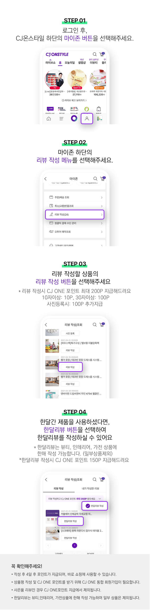
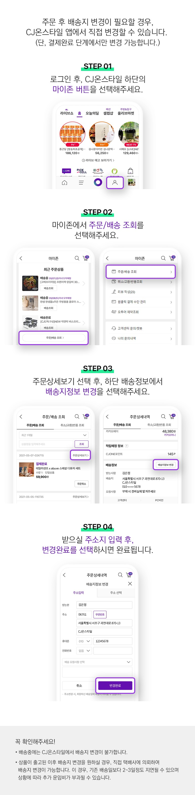
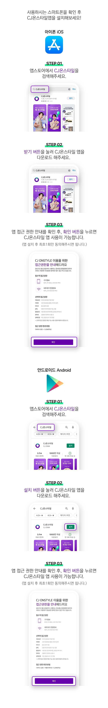

자주하는 질문 TOP 10
- 1반품 신청은 어떻게 하나요?

- 2주문을 취소하고 싶어요.

- 3리뷰는 어떻게 작성하나요?
- 
- 4반품 시 별도 택배비가 부과되나요?
-
1. 반품 택배비가 무료인 경우
- 수령한 상품이 파손/불량이거나 상품이 잘못배송된 경우
2. 반품 택배비가 고객 부담인 경우
- 구입합 상품 상세설명의 교환/반품정보에 배송비 고객부담이라고 표기되어 있는 상품 중 고객변심에 의한 반품을 요청하는 경우
- 5원하는상품 방송시간을 문자로 받고 싶어요

- 6회원 탈퇴는 어떻게 하나요?
-
CJ온스타일 PC 로그인 후 마이존 > [회원 탈퇴] 메뉴를 통해 고객님께서 직접 처리할 수 있습니다.
[회원 탈퇴시 유의점]
- CJ ONE 통합회원의 경우 CJ ONE사이트에서 탈퇴(약관동의철회)처리를 진행하셔야합니다.
- 회원 아이디로 등록되어 있는 적립금, 할인쿠폰, CJ ONE 포인트는 자동 소멸됩니다.
- 회원 탈퇴 시 CJ온스타일이 운영하고 있는 모든 사이트에서 동시 회원탈퇴 됩니다.
- 회원 탈퇴 후 재가입 하는 경우에도 신규가입혜택(할인쿠폰 등)은 적용되지 않으며 신규회원 대상 이벤트에 응모할 수 없습니다. - 7배송지를 변경 할 수 있나요?
- 
- 8교환 신청은 어떻게 하나요?

- 9CJ온스타일 앱(어플리케이션)은 어떻게 설치하나요?
- 
- 10결제수단 변경하려면 주문취소하고 재주문하나요?
-
상품을 취소하지 않고도 다른 결제수단으로 결제 변경이 가능합니다.
- [CJ온스타일 로그인] > [마이존] > [주문/배송 조회] > [결제변경]
: 당일 주문 건에 한하여 23시30분까지 신용카드로 결제변경이 가능합니다.
- 신용카드 외 다른 결제수단으로 변경을 원하는 경우
: 당사 고객센터(1644-2525)로 연락주시면 결제변경 도와드리겠습니다.